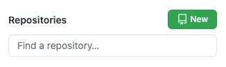
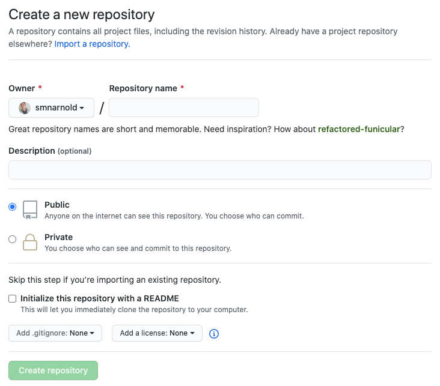

Comme mentionné précédemment, lorsqu'un développeur utilise la commande Git push, il envoie une sauvegarde de son projet en ligne. Cependant, pour fonctionner cette approche nécessite un espace en ligne.
C'est ici que GitHub entre en jeu!
Par défaut, héberger un projet sur GitHub est gratuit et beaucoup de projets sont publics afin de pouvoir être consultés/modifiés au besoin. Parmi ces projets, on retrouve plusieurs librairies connues, telles que:
Et d'organisations d'envergures.
- La NASA 👨🚀
- Microsoft
- Etc.
L'aspect public peut à priori peut sembler étrange, mais il favorise grandement la collaboration entre développeurs, puisqu'il permet de:
- Faire une copie d'un projet.
- D'y apporter des modifications.
Pour créer un répertoire, il suffit d'être connecté à GitHub et de se rendre sur la page d'accueil. En haut à gauche de l'interface, un bouton New permet d'accéder à la page d'initialisation d'un nouveau repo.
Sur cette page, il suffit d'entrer le nom désiré du repo, une brève description et son statut (privé ou public).
De plus, il est possible de spécifier si un fichier README devrait être créé, de spécifier si l'on souhaite utiliser un .gitignore et si une licence devrait être attribuée au projet.
Le README sert à présenter un projet. Lorsque vous êtes sur la page d'accueil d'un répertoire, vous pouvez voir l'arborescence des fichiers le constituant suivis du README. Voici un exemple minimaliste.
Par défaut, si vous avez coché Initialize this repository with a README, un README sera créé avec
le titre du repo et la description que vous avez entrée au moment de sa création. Il est possible
de modifier ce fichier ultérieurement afin d'y incorporer plus d'informations si désirées.
Ce fichier indique généralement la raison d'être du projet et souvent comment l'utiliser. Sans lui, un projet ne ressemble qu'à une collection de fichiers pour quiconque n'ayant pas travaillé sur le projet.
Le fichier .gitignore permet de spécifier à Git des fichiers ou dossiers à l'intérieur du repo qu'il ne devrait pas surveiller et pousser vers le serveur (GitHub).
Par exemple, il est possible d'avoir un fichier contenant ses identifications (nom d'usager et mot de
passe) à la racine du projet. Cependant, ces informations ne devraient pas être disponibles à tous sur
GitHub. Il est donc possible de spécifier d'ignorer ce fichier en ajoutant son nom et son extension dans
le .gitignore, ex: identifiants.doc.
Parfois certains fichiers ne sont simplement pas pertinents au projet en soi. Par exemple, lors de la création d'un
site WordPress, seul le thème développé compte réellement. Il est donc préférable de télécharger WordPress sur
le site officiel de
WordPress, afin d'avoir la version la récente et à l'intérieur de celui-ci, de télécharger
le repo Git contenant le thème seul. Ainsi les mises à jour fréquentes de WordPress ne
nécessitent pas de commits, push et pull pour
l'équipe de développement.
Si un repo n'a aucune licence, il est possible d'utiliser son contenu librement. Cependant, certaines licences vont spécifier:
- de créditer l'auteur.
- que son usage est réservé aux projets à but non lucratif.
- de ne pas modifier le contenu.
- etc.
Si vous avez créé votre repo en ligne, il est probable que vous désirez éventuellement le modifier sur votre ordinateur. Pour ce faire, il faut repérer le bouton vert ⬇️ Code en haut à droite de votre page de répertoire.
En cliquant sur celui-ci, vous aurez les options de:
-
Copier l'url du répertoire, ce qui peut-être requis par certains logiciels concurrents à GitHub Desktop.
-
Cliquer sur Open with GitHub Desktop, l'option la plus facile si vous avez ce logiciel d'installé sur votre ordinateur.
-
Cliquer sur Download ZIP. Cependant, cette option ne gardera aucun lien entre votre version en ligne GitHub et la version que vous venez de télécharger. Il est donc préférable d'éviter cette option, dans la majorité des cas.
Comme mentionné précédemment, pour modifier un repo en ligne, il faut en être l'auteur ou en avoir obtenu la permission. Néanmoins, il est possible d'être intéressé par un projet et de vouloir s'en servir comme point de départ pour créer son propre projet.
Pour ce faire, il est possible d'effectuer un fork. Cette commande copie le repo GitHub en question vers votre compte GitHub. Puisque cette copie du repo vous appartient, vous pouvez effectuer des modifications et push sur celle-ci sans problème.
Pour ce faire, il faut cliquer sur le bouton Fork en au à droite du répertoire que l'on désire copier.
Il existe plusieurs alternatives à GitHub, notamment:
Néanmoins, GitHub étant le plus grand hébergeur de code source au monde (50 millions d'utilisateurs, + de 100 millions de projets), sera l'hébergeur enseigné dans le cadre de ce cours.